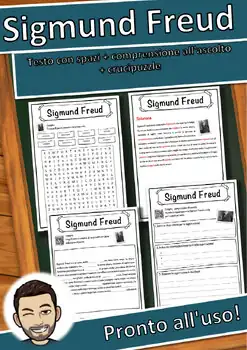
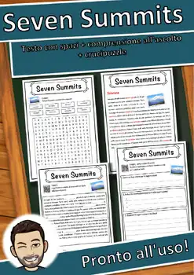

New resources
My newest resources appear here first. The list updates automatically.
48 resources

Sojabohne – Italian Reading Comprehension Worksheet (Scheda): Cloze & Listening

Software – Italian Reading Comprehension Worksheet (Scheda): Cloze & Listening

Sofia – Italian Reading Comprehension Worksheet (Scheda): Cloze & Listening

Sodio – Italian Reading Comprehension Worksheet (Scheda): Cloze & Listening

Socialismo – Italian Reading Comprehension Worksheet (Scheda): Cloze & Listening
Socialdemocrazia – Italian Reading Comprehension Worksheet (Scheda didattica)
Social media – Italian Reading Comprehension Worksheet (Scheda didattica)

Smartphone – Italian Reading Comprehension Worksheet (Scheda): Cloze & Listening
Smalto per unghie – Italian Reading Comprehension Worksheet (Scheda didattica)

Slovenia – Italian Reading Comprehension Worksheet (Scheda): Cloze & Listening

Slovacchia – Italian Reading Comprehension Worksheet (Scheda): Cloze & Listening

Slesia – Italian Reading Comprehension Worksheet (Scheda): Cloze & Listening

Slavi – Italian Reading Comprehension Worksheet (Scheda): Cloze & Listening

Skyline – Italian Reading Comprehension Worksheet (Scheda): Cloze & Listening

Skopje – Italian Reading Comprehension Worksheet (Scheda): Cloze & Listening

Skelett – Italian Reading Comprehension Worksheet (Scheda): Cloze & Listening

Skateboard – Italian Reading Comprehension Worksheet (Scheda): Cloze & Listening

Siviglia – Italian Reading Comprehension Worksheet (Scheda): Cloze & Listening
Sistema solare – Italian Reading Comprehension Worksheet (Scheda didattica)
Simiiformes – Italian Reading Comprehension Worksheet (Scheda didattica)

Sigillo – Italian Reading Comprehension Worksheet (Scheda): Cloze & Listening
Sierra Leone – Italian Reading Comprehension Worksheet (Scheda didattica)

Scorpiones – Italian Reading Comprehension Worksheet (Scheda): Cloze & Listening
Sistema muscolare – Italian Reading Comprehension Worksheet (Scheda didattica)
Sistema immunitario – Italian Reading Comprehension Worksheet (Scheda didattica)

Sistema di scrittura – Italian Reading Comprehension Worksheet

Siria – Italian Reading Comprehension Worksheet (Scheda): Cloze & Listening
Siphonaptera – Italian Reading Comprehension Worksheet (Scheda didattica)

Sioux – Italian Reading Comprehension Worksheet (Scheda): Cloze & Listening

Singhiozzo – Italian Reading Comprehension Worksheet (Scheda): Cloze & Listening

Singapore – Italian Reading Comprehension Worksheet (Scheda): Cloze & Listening
Sindone di Torino – Italian Reading Comprehension Worksheet (Scheda didattica)

Sindacato – Italian Reading Comprehension Worksheet (Scheda): Cloze & Listening
Simon Petrus – Italian Reading Comprehension Worksheet (Scheda didattica)

Sillaba – Italian Reading Comprehension Worksheet (Scheda): Cloze & Listening

Silicio – Italian Reading Comprehension Worksheet (Scheda): Cloze & Listening

Sigmund Freud – Italian Reading Comprehension Worksheet (Scheda didattica)

Sigaretta – Italian Reading Comprehension Worksheet (Scheda): Cloze & Listening

Siccità – Italian Reading Comprehension Worksheet (Scheda): Cloze & Listening

Sibirien – Italian Reading Comprehension Worksheet (Scheda): Cloze & Listening

Showman – Italian Reading Comprehension Worksheet (Scheda): Cloze & Listening

Shanghai – Italian Reading Comprehension Worksheet (Scheda): Cloze & Listening

Sfera – Italian Reading Comprehension Worksheet (Scheda): Cloze & Listening

Seychellen – Italian Reading Comprehension Worksheet (Scheda): Cloze & Listening

Seven Summits – Italian Reading Comprehension Worksheet (Scheda didattica)

Seul – Italian Reading Comprehension Worksheet (Scheda): Cloze & Listening

Settimana – Italian Reading Comprehension Worksheet (Scheda): Cloze & Listening

Scuola – Italian Reading Comprehension Worksheet (Scheda): Cloze & Listening
No resources found – try a different search term or filter.